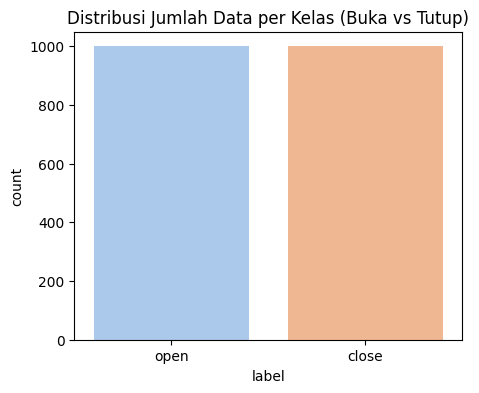
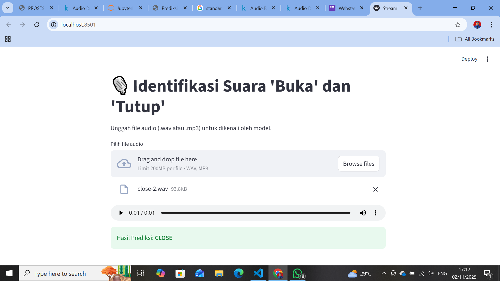

IDENTIFIKASI SUARA ‘BUKA TUTUP’ MENGGUNAKAN FEATURE STATISTIK TIME SERIES#
Pada tugas ini dilakukan proses identifikasi suara “buka” dan “tutup” menggunakan pendekatan feature extraction dari data time series audio. Dataset yang saya gunakan berasal dari Kaggle dengan judul, yaitu Audio Recognition: Open and Close. Berikut adalah sumber link nya : https://www.kaggle.com/datasets/muhammadridhoisdi/audio-recognition-open-and-close.
Dataset tersebut berisi kumpulan rekaman audio berlabel “open” dan “close”. Setiap suara direkam dengan durasi dan intensitas yang berbeda-beda, sehingga dapat digunakan untuk mengenali perbedaan karakteristik bunyi yang dihasilkan oleh dua kata tersebut. Tujuan utama dari tugas ini adalah untuk melakukan analisis fitur statistik dari setiap sinyal suara, agar dapat memahami pola atau karakteristik unik yang membedakan antara kedua jenis suara tersebut.
Instalasi Library#
Pada tahap awal, dilakukan import berbagai library untuk mendukung proses analisis data audio. Library librosa digunakan sebagai alat utama untuk membaca dan menganalisis sinyal suara, sedangkan pandas dan numpy membantu dalam pengolahan data numerik. Proses visualisasi dibantu oleh matplotlib dan seaborn agar hasil analisis mudah dipahami. Selanjutnya, scikit-learn digunakan untuk menyiapkan dataset, melakukan normalisasi, membangun model Random Forest Classifier, dan mengevaluasi performanya dalam mengidentifikasi suara “buka” dan “tutup”.
pip install librosa numpy pandas scikit-learn matplotlib seaborn streamlit
Requirement already satisfied: librosa in c:\users\vanisa\appdata\local\programs\python\python313\lib\site-packages (0.11.0)
Requirement already satisfied: numpy in c:\users\vanisa\appdata\local\programs\python\python313\lib\site-packages (2.3.3)
Requirement already satisfied: pandas in c:\users\vanisa\appdata\local\programs\python\python313\lib\site-packages (2.3.3)
Requirement already satisfied: scikit-learn in c:\users\vanisa\appdata\local\programs\python\python313\lib\site-packages (1.7.2)
Requirement already satisfied: matplotlib in c:\users\vanisa\appdata\local\programs\python\python313\lib\site-packages (3.10.6)
Requirement already satisfied: seaborn in c:\users\vanisa\appdata\local\programs\python\python313\lib\site-packages (0.13.2)
Requirement already satisfied: streamlit in c:\users\vanisa\appdata\local\programs\python\python313\lib\site-packages (1.51.0)
Requirement already satisfied: audioread>=2.1.9 in c:\users\vanisa\appdata\local\programs\python\python313\lib\site-packages (from librosa) (3.1.0)
Requirement already satisfied: numba>=0.51.0 in c:\users\vanisa\appdata\local\programs\python\python313\lib\site-packages (from librosa) (0.62.1)
Requirement already satisfied: scipy>=1.6.0 in c:\users\vanisa\appdata\local\programs\python\python313\lib\site-packages (from librosa) (1.16.2)
Requirement already satisfied: joblib>=1.0 in c:\users\vanisa\appdata\local\programs\python\python313\lib\site-packages (from librosa) (1.5.2)
Requirement already satisfied: decorator>=4.3.0 in c:\users\vanisa\appdata\roaming\python\python313\site-packages (from librosa) (5.2.1)
Requirement already satisfied: soundfile>=0.12.1 in c:\users\vanisa\appdata\local\programs\python\python313\lib\site-packages (from librosa) (0.13.1)
Requirement already satisfied: pooch>=1.1 in c:\users\vanisa\appdata\local\programs\python\python313\lib\site-packages (from librosa) (1.8.2)
Requirement already satisfied: soxr>=0.3.2 in c:\users\vanisa\appdata\local\programs\python\python313\lib\site-packages (from librosa) (1.0.0)
Requirement already satisfied: typing_extensions>=4.1.1 in c:\users\vanisa\appdata\roaming\python\python313\site-packages (from librosa) (4.15.0)
Requirement already satisfied: lazy_loader>=0.1 in c:\users\vanisa\appdata\local\programs\python\python313\lib\site-packages (from librosa) (0.4)
Requirement already satisfied: msgpack>=1.0 in c:\users\vanisa\appdata\local\programs\python\python313\lib\site-packages (from librosa) (1.1.2)
Requirement already satisfied: standard-aifc in c:\users\vanisa\appdata\local\programs\python\python313\lib\site-packages (from librosa) (3.13.0)
Requirement already satisfied: standard-sunau in c:\users\vanisa\appdata\local\programs\python\python313\lib\site-packages (from librosa) (3.13.0)
Requirement already satisfied: python-dateutil>=2.8.2 in c:\users\vanisa\appdata\roaming\python\python313\site-packages (from pandas) (2.9.0.post0)
Requirement already satisfied: pytz>=2020.1 in c:\users\vanisa\appdata\local\programs\python\python313\lib\site-packages (from pandas) (2025.2)
Requirement already satisfied: tzdata>=2022.7 in c:\users\vanisa\appdata\local\programs\python\python313\lib\site-packages (from pandas) (2025.2)
Requirement already satisfied: threadpoolctl>=3.1.0 in c:\users\vanisa\appdata\local\programs\python\python313\lib\site-packages (from scikit-learn) (3.6.0)
Requirement already satisfied: contourpy>=1.0.1 in c:\users\vanisa\appdata\local\programs\python\python313\lib\site-packages (from matplotlib) (1.3.3)
Requirement already satisfied: cycler>=0.10 in c:\users\vanisa\appdata\local\programs\python\python313\lib\site-packages (from matplotlib) (0.12.1)
Requirement already satisfied: fonttools>=4.22.0 in c:\users\vanisa\appdata\local\programs\python\python313\lib\site-packages (from matplotlib) (4.60.1)
Requirement already satisfied: kiwisolver>=1.3.1 in c:\users\vanisa\appdata\local\programs\python\python313\lib\site-packages (from matplotlib) (1.4.9)
Requirement already satisfied: packaging>=20.0 in c:\users\vanisa\appdata\roaming\python\python313\site-packages (from matplotlib) (25.0)
Requirement already satisfied: pillow>=8 in c:\users\vanisa\appdata\local\programs\python\python313\lib\site-packages (from matplotlib) (11.3.0)
Requirement already satisfied: pyparsing>=2.3.1 in c:\users\vanisa\appdata\local\programs\python\python313\lib\site-packages (from matplotlib) (3.2.5)
Requirement already satisfied: altair!=5.4.0,!=5.4.1,<6,>=4.0 in c:\users\vanisa\appdata\local\programs\python\python313\lib\site-packages (from streamlit) (5.5.0)
Requirement already satisfied: blinker<2,>=1.5.0 in c:\users\vanisa\appdata\local\programs\python\python313\lib\site-packages (from streamlit) (1.9.0)
Requirement already satisfied: cachetools<7,>=4.0 in c:\users\vanisa\appdata\local\programs\python\python313\lib\site-packages (from streamlit) (6.2.1)
Requirement already satisfied: click<9,>=7.0 in c:\users\vanisa\appdata\roaming\python\python313\site-packages (from streamlit) (8.3.0)
Requirement already satisfied: protobuf<7,>=3.20 in c:\users\vanisa\appdata\local\programs\python\python313\lib\site-packages (from streamlit) (6.33.0)
Requirement already satisfied: pyarrow<22,>=7.0 in c:\users\vanisa\appdata\local\programs\python\python313\lib\site-packages (from streamlit) (21.0.0)
Requirement already satisfied: requests<3,>=2.27 in c:\users\vanisa\appdata\roaming\python\python313\site-packages (from streamlit) (2.32.5)
Requirement already satisfied: tenacity<10,>=8.1.0 in c:\users\vanisa\appdata\local\programs\python\python313\lib\site-packages (from streamlit) (9.1.2)
Requirement already satisfied: toml<2,>=0.10.1 in c:\users\vanisa\appdata\local\programs\python\python313\lib\site-packages (from streamlit) (0.10.2)
Requirement already satisfied: watchdog<7,>=2.1.5 in c:\users\vanisa\appdata\local\programs\python\python313\lib\site-packages (from streamlit) (6.0.0)
Requirement already satisfied: gitpython!=3.1.19,<4,>=3.0.7 in c:\users\vanisa\appdata\local\programs\python\python313\lib\site-packages (from streamlit) (3.1.45)
Requirement already satisfied: pydeck<1,>=0.8.0b4 in c:\users\vanisa\appdata\local\programs\python\python313\lib\site-packages (from streamlit) (0.9.1)
Requirement already satisfied: tornado!=6.5.0,<7,>=6.0.3 in c:\users\vanisa\appdata\roaming\python\python313\site-packages (from streamlit) (6.5.2)
Requirement already satisfied: jinja2 in c:\users\vanisa\appdata\roaming\python\python313\site-packages (from altair!=5.4.0,!=5.4.1,<6,>=4.0->streamlit) (3.1.6)
Requirement already satisfied: jsonschema>=3.0 in c:\users\vanisa\appdata\roaming\python\python313\site-packages (from altair!=5.4.0,!=5.4.1,<6,>=4.0->streamlit) (4.25.1)
Requirement already satisfied: narwhals>=1.14.2 in c:\users\vanisa\appdata\local\programs\python\python313\lib\site-packages (from altair!=5.4.0,!=5.4.1,<6,>=4.0->streamlit) (2.10.1)
Requirement already satisfied: colorama in c:\users\vanisa\appdata\roaming\python\python313\site-packages (from click<9,>=7.0->streamlit) (0.4.6)
Requirement already satisfied: gitdb<5,>=4.0.1 in c:\users\vanisa\appdata\local\programs\python\python313\lib\site-packages (from gitpython!=3.1.19,<4,>=3.0.7->streamlit) (4.0.12)
Requirement already satisfied: smmap<6,>=3.0.1 in c:\users\vanisa\appdata\local\programs\python\python313\lib\site-packages (from gitdb<5,>=4.0.1->gitpython!=3.1.19,<4,>=3.0.7->streamlit) (5.0.2)
Requirement already satisfied: charset_normalizer<4,>=2 in c:\users\vanisa\appdata\roaming\python\python313\site-packages (from requests<3,>=2.27->streamlit) (3.4.3)
Requirement already satisfied: idna<4,>=2.5 in c:\users\vanisa\appdata\roaming\python\python313\site-packages (from requests<3,>=2.27->streamlit) (3.10)
Requirement already satisfied: urllib3<3,>=1.21.1 in c:\users\vanisa\appdata\roaming\python\python313\site-packages (from requests<3,>=2.27->streamlit) (2.5.0)
Requirement already satisfied: certifi>=2017.4.17 in c:\users\vanisa\appdata\roaming\python\python313\site-packages (from requests<3,>=2.27->streamlit) (2025.10.5)
Requirement already satisfied: MarkupSafe>=2.0 in c:\users\vanisa\appdata\roaming\python\python313\site-packages (from jinja2->altair!=5.4.0,!=5.4.1,<6,>=4.0->streamlit) (3.0.3)
Requirement already satisfied: attrs>=22.2.0 in c:\users\vanisa\appdata\roaming\python\python313\site-packages (from jsonschema>=3.0->altair!=5.4.0,!=5.4.1,<6,>=4.0->streamlit) (25.3.0)
Requirement already satisfied: jsonschema-specifications>=2023.03.6 in c:\users\vanisa\appdata\roaming\python\python313\site-packages (from jsonschema>=3.0->altair!=5.4.0,!=5.4.1,<6,>=4.0->streamlit) (2025.9.1)
Requirement already satisfied: referencing>=0.28.4 in c:\users\vanisa\appdata\roaming\python\python313\site-packages (from jsonschema>=3.0->altair!=5.4.0,!=5.4.1,<6,>=4.0->streamlit) (0.36.2)
Requirement already satisfied: rpds-py>=0.7.1 in c:\users\vanisa\appdata\roaming\python\python313\site-packages (from jsonschema>=3.0->altair!=5.4.0,!=5.4.1,<6,>=4.0->streamlit) (0.27.1)
Requirement already satisfied: llvmlite<0.46,>=0.45.0dev0 in c:\users\vanisa\appdata\local\programs\python\python313\lib\site-packages (from numba>=0.51.0->librosa) (0.45.1)
Requirement already satisfied: platformdirs>=2.5.0 in c:\users\vanisa\appdata\roaming\python\python313\site-packages (from pooch>=1.1->librosa) (4.4.0)
Requirement already satisfied: six>=1.5 in c:\users\vanisa\appdata\roaming\python\python313\site-packages (from python-dateutil>=2.8.2->pandas) (1.17.0)
Requirement already satisfied: cffi>=1.0 in c:\users\vanisa\appdata\local\programs\python\python313\lib\site-packages (from soundfile>=0.12.1->librosa) (2.0.0)
Requirement already satisfied: pycparser in c:\users\vanisa\appdata\local\programs\python\python313\lib\site-packages (from cffi>=1.0->soundfile>=0.12.1->librosa) (2.23)
Requirement already satisfied: standard-chunk in c:\users\vanisa\appdata\local\programs\python\python313\lib\site-packages (from standard-aifc->librosa) (3.13.0)
Requirement already satisfied: audioop-lts in c:\users\vanisa\appdata\local\programs\python\python313\lib\site-packages (from standard-aifc->librosa) (0.2.2)
Note: you may need to restart the kernel to use updated packages.
[notice] A new release of pip is available: 25.2 -> 25.3
[notice] To update, run: python.exe -m pip install --upgrade pip
=======
^C
Collecting librosaNote: you may need to restart the kernel to use updated packages.
Using cached librosa-0.11.0-py3-none-any.whl (260 kB)
Requirement already satisfied: numpy in c:\users\triad\appdata\local\programs\python\python39\lib\site-packages (2.0.2)
Requirement already satisfied: pandas in c:\users\triad\appdata\local\programs\python\python39\lib\site-packages (2.3.2)
Requirement already satisfied: scikit-learn in c:\users\triad\appdata\local\programs\python\python39\lib\site-packages (1.6.1)
Requirement already satisfied: matplotlib in c:\users\triad\appdata\local\programs\python\python39\lib\site-packages (3.9.4)
Requirement already satisfied: seaborn in c:\users\triad\appdata\local\programs\python\python39\lib\site-packages (0.13.2)
Collecting streamlit
Using cached streamlit-1.50.0-py3-none-any.whl (10.1 MB)
Requirement already satisfied: lazy_loader>=0.1 in c:\users\triad\appdata\local\programs\python\python39\lib\site-packages (from librosa) (0.4)
Requirement already satisfied: soxr>=0.3.2 in c:\users\triad\appdata\local\programs\python\python39\lib\site-packages (from librosa) (1.0.0)
Requirement already satisfied: joblib>=1.0 in c:\users\triad\appdata\local\programs\python\python39\lib\site-packages (from librosa) (1.5.2)
Requirement already satisfied: typing_extensions>=4.1.1 in c:\users\triad\appdata\local\programs\python\python39\lib\site-packages (from librosa) (4.15.0)
Requirement already satisfied: decorator>=4.3.0 in c:\users\triad\appdata\local\programs\python\python39\lib\site-packages (from librosa) (5.2.1)
Requirement already satisfied: pooch>=1.1 in c:\users\triad\appdata\local\programs\python\python39\lib\site-packages (from librosa) (1.8.2)
Requirement already satisfied: soundfile>=0.12.1 in c:\users\triad\appdata\local\programs\python\python39\lib\site-packages (from librosa) (0.13.1)
Requirement already satisfied: msgpack>=1.0 in c:\users\triad\appdata\local\programs\python\python39\lib\site-packages (from librosa) (1.1.2)
Requirement already satisfied: scipy>=1.6.0 in c:\users\triad\appdata\local\programs\python\python39\lib\site-packages (from librosa) (1.13.1)
Requirement already satisfied: audioread>=2.1.9 in c:\users\triad\appdata\local\programs\python\python39\lib\site-packages (from librosa) (3.1.0)
Requirement already satisfied: numba>=0.51.0 in c:\users\triad\appdata\local\programs\python\python39\lib\site-packages (from librosa) (0.60.0)
Requirement already satisfied: pytz>=2020.1 in c:\users\triad\appdata\local\programs\python\python39\lib\site-packages (from pandas) (2025.2)
Requirement already satisfied: python-dateutil>=2.8.2 in c:\users\triad\appdata\local\programs\python\python39\lib\site-packages (from pandas) (2.9.0.post0)
Requirement already satisfied: tzdata>=2022.7 in c:\users\triad\appdata\local\programs\python\python39\lib\site-packages (from pandas) (2025.2)
Requirement already satisfied: threadpoolctl>=3.1.0 in c:\users\triad\appdata\local\programs\python\python39\lib\site-packages (from scikit-learn) (3.6.0)
Requirement already satisfied: pillow>=8 in c:\users\triad\appdata\local\programs\python\python39\lib\site-packages (from matplotlib) (11.3.0)
Requirement already satisfied: kiwisolver>=1.3.1 in c:\users\triad\appdata\local\programs\python\python39\lib\site-packages (from matplotlib) (1.4.7)
Requirement already satisfied: packaging>=20.0 in c:\users\triad\appdata\local\programs\python\python39\lib\site-packages (from matplotlib) (25.0)
Requirement already satisfied: importlib-resources>=3.2.0 in c:\users\triad\appdata\local\programs\python\python39\lib\site-packages (from matplotlib) (6.5.2)
Requirement already satisfied: contourpy>=1.0.1 in c:\users\triad\appdata\local\programs\python\python39\lib\site-packages (from matplotlib) (1.3.0)
Requirement already satisfied: cycler>=0.10 in c:\users\triad\appdata\local\programs\python\python39\lib\site-packages (from matplotlib) (0.12.1)
Requirement already satisfied: fonttools>=4.22.0 in c:\users\triad\appdata\local\programs\python\python39\lib\site-packages (from matplotlib) (4.60.0)
Requirement already satisfied: pyparsing>=2.3.1 in c:\users\triad\appdata\local\programs\python\python39\lib\site-packages (from matplotlib) (3.2.5)
Requirement already satisfied: watchdog<7,>=2.1.5 in c:\users\triad\appdata\local\programs\python\python39\lib\site-packages (from streamlit) (6.0.0)
Requirement already satisfied: toml<2,>=0.10.1 in c:\users\triad\appdata\local\programs\python\python39\lib\site-packages (from streamlit) (0.10.2)
Requirement already satisfied: blinker<2,>=1.5.0 in c:\users\triad\appdata\local\programs\python\python39\lib\site-packages (from streamlit) (1.9.0)
Requirement already satisfied: click<9,>=7.0 in c:\users\triad\appdata\local\programs\python\python39\lib\site-packages (from streamlit) (8.1.8)
Requirement already satisfied: pyarrow>=7.0 in c:\users\triad\appdata\local\programs\python\python39\lib\site-packages (from streamlit) (21.0.0)
Requirement already satisfied: tenacity<10,>=8.1.0 in c:\users\triad\appdata\local\programs\python\python39\lib\site-packages (from streamlit) (9.1.2)
Collecting altair!=5.4.0,!=5.4.1,<6,>=4.0
Using cached altair-5.5.0-py3-none-any.whl (731 kB)
Requirement already satisfied: pydeck<1,>=0.8.0b4 in c:\users\triad\appdata\local\programs\python\python39\lib\site-packages (from streamlit) (0.9.1)
Requirement already satisfied: cachetools<7,>=4.0 in c:\users\triad\appdata\local\programs\python\python39\lib\site-packages (from streamlit) (6.2.1)
Collecting gitpython!=3.1.19,<4,>=3.0.7
Using cached gitpython-3.1.45-py3-none-any.whl (208 kB)
Requirement already satisfied: requests<3,>=2.27 in c:\users\triad\appdata\local\programs\python\python39\lib\site-packages (from streamlit) (2.32.5)
Requirement already satisfied: protobuf<7,>=3.20 in c:\users\triad\appdata\local\programs\python\python39\lib\site-packages (from streamlit) (6.32.1)
Requirement already satisfied: tornado!=6.5.0,<7,>=6.0.3 in c:\users\triad\appdata\local\programs\python\python39\lib\site-packages (from streamlit) (6.5.2)
Requirement already satisfied: jinja2 in c:\users\triad\appdata\local\programs\python\python39\lib\site-packages (from altair!=5.4.0,!=5.4.1,<6,>=4.0->streamlit) (3.1.6)
Requirement already satisfied: narwhals>=1.14.2 in c:\users\triad\appdata\local\programs\python\python39\lib\site-packages (from altair!=5.4.0,!=5.4.1,<6,>=4.0->streamlit) (2.10.1)
Requirement already satisfied: jsonschema>=3.0 in c:\users\triad\appdata\local\programs\python\python39\lib\site-packages (from altair!=5.4.0,!=5.4.1,<6,>=4.0->streamlit) (4.25.1)
Requirement already satisfied: colorama in c:\users\triad\appdata\local\programs\python\python39\lib\site-packages (from click<9,>=7.0->streamlit) (0.4.6)
Requirement already satisfied: gitdb<5,>=4.0.1 in c:\users\triad\appdata\local\programs\python\python39\lib\site-packages (from gitpython!=3.1.19,<4,>=3.0.7->streamlit) (4.0.12)
Requirement already satisfied: zipp>=3.1.0 in c:\users\triad\appdata\local\programs\python\python39\lib\site-packages (from importlib-resources>=3.2.0->matplotlib) (3.23.0)
Requirement already satisfied: llvmlite<0.44,>=0.43.0dev0 in c:\users\triad\appdata\local\programs\python\python39\lib\site-packages (from numba>=0.51.0->librosa) (0.43.0)
Requirement already satisfied: platformdirs>=2.5.0 in c:\users\triad\appdata\local\programs\python\python39\lib\site-packages (from pooch>=1.1->librosa) (4.4.0)
Requirement already satisfied: six>=1.5 in c:\users\triad\appdata\local\programs\python\python39\lib\site-packages (from python-dateutil>=2.8.2->pandas) (1.17.0)
Requirement already satisfied: charset_normalizer<4,>=2 in c:\users\triad\appdata\local\programs\python\python39\lib\site-packages (from requests<3,>=2.27->streamlit) (3.4.3)
Requirement already satisfied: idna<4,>=2.5 in c:\users\triad\appdata\local\programs\python\python39\lib\site-packages (from requests<3,>=2.27->streamlit) (3.10)
Requirement already satisfied: certifi>=2017.4.17 in c:\users\triad\appdata\local\programs\python\python39\lib\site-packages (from requests<3,>=2.27->streamlit) (2025.8.3)
Requirement already satisfied: urllib3<3,>=1.21.1 in c:\users\triad\appdata\local\programs\python\python39\lib\site-packages (from requests<3,>=2.27->streamlit) (2.5.0)
Requirement already satisfied: cffi>=1.0 in c:\users\triad\appdata\local\programs\python\python39\lib\site-packages (from soundfile>=0.12.1->librosa) (2.0.0)
Requirement already satisfied: pycparser in c:\users\triad\appdata\local\programs\python\python39\lib\site-packages (from cffi>=1.0->soundfile>=0.12.1->librosa) (2.23)
Requirement already satisfied: smmap<6,>=3.0.1 in c:\users\triad\appdata\local\programs\python\python39\lib\site-packages (from gitdb<5,>=4.0.1->gitpython!=3.1.19,<4,>=3.0.7->streamlit) (5.0.2)
Requirement already satisfied: MarkupSafe>=2.0 in c:\users\triad\appdata\local\programs\python\python39\lib\site-packages (from jinja2->altair!=5.4.0,!=5.4.1,<6,>=4.0->streamlit) (3.0.3)
Requirement already satisfied: rpds-py>=0.7.1 in c:\users\triad\appdata\local\programs\python\python39\lib\site-packages (from jsonschema>=3.0->altair!=5.4.0,!=5.4.1,<6,>=4.0->streamlit) (0.27.1)
Requirement already satisfied: referencing>=0.28.4 in c:\users\triad\appdata\local\programs\python\python39\lib\site-packages (from jsonschema>=3.0->altair!=5.4.0,!=5.4.1,<6,>=4.0->streamlit) (0.36.2)
Requirement already satisfied: jsonschema-specifications>=2023.03.6 in c:\users\triad\appdata\local\programs\python\python39\lib\site-packages (from jsonschema>=3.0->altair!=5.4.0,!=5.4.1,<6,>=4.0->streamlit) (2025.9.1)
Requirement already satisfied: attrs>=22.2.0 in c:\users\triad\appdata\local\programs\python\python39\lib\site-packages (from jsonschema>=3.0->altair!=5.4.0,!=5.4.1,<6,>=4.0->streamlit) (25.3.0)
Installing collected packages: gitpython, librosa, altair, streamlit
>>>>>>> ff8a6e6c9ed19be74b1219edc5b7aab7dcd29881
import os
import numpy as np
import pandas as pd
import librosa
import matplotlib.pyplot as plt
import seaborn as sns
from sklearn.model_selection import train_test_split
from sklearn.preprocessing import MinMaxScaler
from sklearn.ensemble import RandomForestClassifier
from sklearn.metrics import accuracy_score, confusion_matrix, classification_report
Ekstraksi Audio Ke Time Series#
Setiap file audio pada dataset sebenarnya merupakan sinyal suara dalam bentuk gelombang, yaitu kumpulan nilai amplitudo yang berubah terhadap waktu. Ketika file audio dibaca menggunakan librosa, isi file akan diubah menjadi deretan angka (array satu dimensi) yang merepresentasikan intensitas suara dari waktu ke waktu. Angka-angka ini menunjukkan perubahan tekanan suara (amplitudo) setiap milidetik selama rekaman berlangsung.Karena jumlah datanya bisa ribuan per file, maka tidak efisien kalau diproses langsung. Oleh karena itu, setiap file audio diringkas menjadi beberapa fitur statistik yang dapat mewakili bentuk umum sinyalnya.
Berikut penjelasan tiap fitur yang dihasilkan:
Mean, merupakan nilai rata-rata amplitudo sinyal suara. Nilai ini menunjukkan kecenderungan arah sinyal (positif, negatif, atau netral).
Standard Deviation (std), yaitu ukuran penyebaran nilai amplitudo terhadap rata-rata. Semakin besar nilainya, semakin bervariasi atau “dinamis” suara tersebut.
Minimum (min), yaitu nilai amplitudo terendah pada sinyal. Nilai ini menggambarkan seberapa rendah atau lembut bagian terlemah dari suara.
Maximum (max), yaitu nilai amplitudo tertinggi pada sinyal. nilai ini menunjukkan bagian paling kuat dari suara yang direkam.
Median, yaitu nilai tengah dari distribusi amplitudo. Nilai ini yang memberi gambaran umum posisi rata-rata energi suara tanpa terpengaruh nilai ekstrem.
Root Mean Square (rms), yaitu ukuran energi rata-rata dari sinyal. Nilai ini sering digunakan untuk mengukur kekuatan suara: semakin besar RMS, semakin keras suaranya.
Zero Crossing Rate (zcr), yaitu frekuensi perubahan tanda amplitudo dari positif ke negatif (atau sebaliknya). Semakin tinggi ZCR, semakin “kasar” atau “berisik” karakter suara tersebut (biasanya muncul pada konsonan tajam seperti k, t, s).
DATASET_PATH = "audio-open-close"
def extract_features(file_path):
try:
y, sr = librosa.load(file_path, sr=None)
features = {
'mean': np.mean(y),
'std': np.std(y),
'min': np.min(y),
'max': np.max(y),
'median': np.median(y),
'rms': np.mean(librosa.feature.rms(y=y)),
'zcr': np.mean(librosa.feature.zero_crossing_rate(y)),
}
return features
except Exception as e:
print(f"Error processing {file_path}: {e}")
return None
data = []
for label in ['open', 'close']:
folder = os.path.join(DATASET_PATH, label)
for file_name in os.listdir(folder):
file_path = os.path.join(folder, file_name)
if file_path.endswith(('.wav', '.mp3', '.flac')):
features = extract_features(file_path)
if features:
features['label'] = label
data.append(features)
df = pd.DataFrame(data)
df.head()
| mean | std | min | max | median | rms | zcr | label | |
|---|---|---|---|---|---|---|---|---|
| 0 | 0.000143 | 0.194289 | -1.000000 | 0.999969 | 0.002319 | 0.166674 | 0.010550 | open |
| 1 | -0.000013 | 0.074108 | -0.130035 | 0.136414 | -0.003891 | 0.073556 | 0.002701 | open |
| 2 | 0.004573 | 0.186907 | -1.000000 | 0.999969 | 0.000366 | 0.152650 | 0.007418 | open |
| 3 | 0.004573 | 0.186907 | -1.000000 | 0.999969 | 0.000366 | 0.152650 | 0.007418 | open |
| 4 | 0.000143 | 0.194289 | -1.000000 | 0.999969 | 0.002319 | 0.166674 | 0.010550 | open |
df.to_csv("hasil_fitur_audio.csv", index=False)
print("✅ File berhasil disimpan sebagai 'hasil_fitur_audio.csv'")
✅ File berhasil disimpan sebagai 'hasil_fitur_audio.csv'
Analisis Distribusi Jumlah Data per Kelas#
Langkah ini dilakukan untuk melihat keseimbangan jumlah data antara dua kelas, yaitu suara “buka” (open) dan “tutup” (close). Distribusi yang seimbang penting agar model machine learning tidak cenderung mempelajari satu kelas saja (bias atau class imbalance). Kode berikut menghitung jumlah data dari masing-masing label menggunakan value_counts(), lalu menampilkannya dalam bentuk grafik batang (countplot) agar lebih mudah dipahami secara visual.
Jika kedua batang pada grafik memiliki tinggi yang hampir sama, berarti dataset seimbang dan model dapat belajar secara adil dari kedua jenis suara. Namun, jika salah satu batang jauh lebih tinggi, berarti terdapat ketimpangan jumlah data, yang bisa menyebabkan model lebih mengenali satu kelas dibandingkan yang lain.
jumlah_data = df['label'].value_counts()
print("Jumlah data per kelas:\n", jumlah_data)
plt.figure(figsize=(5,4))
sns.countplot(x='label', data=df, palette='pastel')
plt.title("Distribusi Jumlah Data per Kelas (Buka vs Tutup)")
plt.show()
Jumlah data per kelas:
label
open 1000
close 1000
Name: count, dtype: int64
C:\Users\vanisa\AppData\Local\Temp\ipykernel_16728\385016398.py:5: FutureWarning:
=======
C:\Users\vanisa\AppData\Local\Temp\ipykernel_2588\385016398.py:5: FutureWarning:
>>>>>>> ff8a6e6c9ed19be74b1219edc5b7aab7dcd29881
Passing `palette` without assigning `hue` is deprecated and will be removed in v0.14.0. Assign the `x` variable to `hue` and set `legend=False` for the same effect.
sns.countplot(x='label', data=df, palette='pastel')

Pengecekan Missing Value#
Dari dataset tersebut tidak ada missing value
print("Cek missing value tiap kolom:\n", df.isnull().sum())
df.describe()
Cek missing value tiap kolom:
mean 0
std 0
min 0
max 0
median 0
rms 0
zcr 0
label 0
dtype: int64
| mean | std | min | max | median | rms | zcr | |
|---|---|---|---|---|---|---|---|
| count | 2000.000000 | 2000.000000 | 2000.000000 | 2000.000000 | 2000.000000 | 2000.000000 | 2000.000000 |
| mean | 0.000392 | 0.172956 | -0.939547 | 0.869082 | -0.000529 | 0.149477 | 0.014330 |
| std | 0.001261 | 0.030935 | 0.187570 | 0.201528 | 0.002966 | 0.025984 | 0.006158 |
| min | -0.001472 | 0.074108 | -1.000000 | 0.136414 | -0.006958 | 0.073556 | 0.002701 |
| 25% | -0.000072 | 0.160485 | -1.000000 | 0.822876 | -0.002960 | 0.140417 | 0.009941 |
| 50% | 0.000066 | 0.173405 | -1.000000 | 0.953400 | -0.000633 | 0.152650 | 0.013508 |
| 75% | 0.000366 | 0.194289 | -0.958801 | 0.999969 | 0.002075 | 0.165365 | 0.021542 |
| max | 0.004573 | 0.226265 | -0.130035 | 0.999969 | 0.005371 | 0.203490 | 0.028575 |
Pemilahan Fitur dan Label pada Dataset#
Pada tahap ini, dataset dipisahkan menjadi dua bagian utama:
Fitur (X) → berisi nilai-nilai statistik hasil ekstraksi dari sinyal audio, seperti mean, standard deviation (std), minimum (min), maximum (max), median, Root Mean Square (RMS), dan Zero Crossing Rate (ZCR). Semua fitur ini menggambarkan karakteristik numerik dari sinyal suara “buka” dan “tutup”.
Label (y) → berisi kategori atau kelas target, yaitu open dan close.
Pemilahan ini bertujuan agar proses pembelajaran mesin dapat memahami mana data yang digunakan untuk belajar pola suara dan mana yang menjadi tujuan prediksi. Output dari kode ini juga menampilkan jumlah fitur yang digunakan serta jumlah total sampel yang tersedia setelah proses pembersihan data sebelumnya.
X = df.drop(columns=['label'])
y = df['label']
print("Jumlah fitur:", X.shape[1])
print("Jumlah sampel:", X.shape[0])
Jumlah fitur: 7
Jumlah sampel: 2000
Split Data#
X_train, X_test, y_train, y_test = train_test_split(
X, y, test_size=0.2, random_state=42, stratify=y
)
print("Data train:", X_train.shape)
print("Data test :", X_test.shape)
Data train: (1600, 7)
Data test : (400, 7)
Normalisasi Data Menggunakan MinMaxScaler#
scaler = MinMaxScaler()
X_train_scaled = scaler.fit_transform(X_train)
X_test_scaled = scaler.transform(X_test)
X_train_scaled = pd.DataFrame(X_train_scaled, columns=X.columns)
X_test_scaled = pd.DataFrame(X_test_scaled, columns=X.columns)
X_train_scaled.head()
| mean | std | min | max | median | rms | zcr | |
|---|---|---|---|---|---|---|---|
| 0 | 0.321710 | 0.866417 | 0.000000 | 0.999187 | 0.235149 | 0.776711 | 0.274844 |
| 1 | 0.298277 | 0.751680 | 0.000000 | 1.000000 | 0.455446 | 0.641188 | 0.213812 |
| 2 | 0.246633 | 0.557313 | 0.109412 | 0.628936 | 0.493812 | 0.526421 | 0.512347 |
| 3 | 0.233170 | 0.567684 | 0.034413 | 0.915680 | 0.324257 | 0.479059 | 0.506324 |
| 4 | 0.321710 | 0.866417 | 0.000000 | 0.999187 | 0.235149 | 0.776711 | 0.274844 |
Pelatihan Model Menggunakan Random Forest#
Berdasarkan hasil evaluasi, model Random Forest Classifier berhasil mencapai akurasi 100%, dengan nilai precision, recall, dan f1-score sempurna pada kedua kelas (open dan close).
Hal ini menunjukkan bahwa:
Model mampu membedakan secara konsisten antara suara “buka” dan “tutup” berdasarkan fitur statistik yang diekstraksi dari sinyal audio.
Semua sampel pada data uji berhasil diklasifikasikan tanpa kesalahan (zero error).
Fitur-fitur seperti RMS (energi sinyal) dan Zero Crossing Rate (ZCR) kemungkinan memiliki kontribusi besar dalam membedakan pola suara kedua kelas.
Hal ini bisa saja terjadi karena dataset memiliki pola yang sangat jelas atau homogen, atau data latih dan uji terlalu mirip, sehingga model tidak benar-benar diuji pada variasi suara yang cukup luas.
model = RandomForestClassifier(n_estimators=100, random_state=42)
model.fit(X_train_scaled, y_train)
y_pred = model.predict(X_test_scaled)
print("Akurasi model: ", round(accuracy_score(y_test, y_pred)*100, 2), "%")
print("\nClassification Report:\n", classification_report(y_test, y_pred))
Akurasi model: 100.0 %
Classification Report:
precision recall f1-score support
close 1.00 1.00 1.00 200
open 1.00 1.00 1.00 200
accuracy 1.00 400
macro avg 1.00 1.00 1.00 400
weighted avg 1.00 1.00 1.00 400
Visualisasi Menggunakan Confusion Matrix#
cm = confusion_matrix(y_test, y_pred, labels=model.classes_)
sns.heatmap(cm, annot=True, fmt='d', cmap='Blues',
xticklabels=model.classes_, yticklabels=model.classes_)
plt.xlabel("Predicted")
plt.ylabel("Actual")
plt.title("Confusion Matrix Identifikasi Suara Buka/Tutup")
plt.show()
Implementasi Prediksi Audio ‘Buka atau Tutup’ Menggunakan Streamlit#
Implementasi ini dilakukan dengan membangun antarmuka interaktif menggunakan Streamlit, yaitu framework berbasis Python untuk membuat aplikasi web data science secara cepat dan sederhana. Tujuan utamanya adalah menampilkan hasil prediksi model klasifikasi audio (antara suara “buka” dan “tutup”) ke dalam bentuk aplikasi web yang mudah digunakan. Sebagai contoh, disini saya tampilkan tampilan sederhana untuk identifikasi nya.
from sklearn.preprocessing import StandardScaler
import joblib
scaler_X = StandardScaler()
X_scaled = scaler_X.fit_transform(X)
model = RandomForestClassifier(n_estimators=100, random_state=42)
model.fit(X_scaled, y)
joblib.dump(model, "model.pkl")
joblib.dump(scaler_X, "scaler_X.pkl")
print("✅ Model dan scaler berhasil disimpan!")
✅ Model dan scaler berhasil disimpan!
Selanjutnya menulis kod yang disimpan di file app.py. Hal ini dikarenakan streamlit tidk dapat berjalan di file.ipynb yang berbasil cell
import streamlit as st
import librosa
import numpy as np
import joblib
# Load model dan scaler
model = joblib.load("model.pkl")
scaler_X = joblib.load("scaler_X.pkl")
st.title("🎙️ Identifikasi Suara 'Buka' dan 'Tutup'")
st.write("Unggah file audio (.wav atau .mp3) untuk dikenali oleh model.")
uploaded_file = st.file_uploader("Pilih file audio", type=["wav", "mp3"])
def extract_features(y, sr):
return np.array([
np.mean(y),
np.std(y),
np.min(y),
np.max(y),
np.median(y),
np.mean(librosa.feature.rms(y=y)),
np.mean(librosa.feature.zero_crossing_rate(y))
])
if uploaded_file is not None:
st.audio(uploaded_file, format="audio/wav")
y, sr = librosa.load(uploaded_file, sr=None)
features = extract_features(y, sr).reshape(1, -1)
features_scaled = scaler_X.transform(features)
prediction = model.predict(features_scaled)[0]
st.success(f"Hasil Prediksi: **{prediction.upper()}**")
else:
st.info("Silakan unggah file audio untuk memulai prediksi.")
2025-12-23 22:06:51.039 WARNING streamlit.runtime.scriptrunner_utils.script_run_context: Thread 'MainThread': missing ScriptRunContext! This warning can be ignored when running in bare mode.
2025-12-23 22:06:51.630
Warning: to view this Streamlit app on a browser, run it with the following
command:
streamlit run C:\Users\vanisa\AppData\Roaming\Python\Python313\site-packages\ipykernel_launcher.py [ARGUMENTS]
2025-12-23 22:06:51.631 Thread 'MainThread': missing ScriptRunContext! This warning can be ignored when running in bare mode.
2025-12-23 22:06:51.632 Thread 'MainThread': missing ScriptRunContext! This warning can be ignored when running in bare mode.
2025-12-23 22:06:51.633 Thread 'MainThread': missing ScriptRunContext! This warning can be ignored when running in bare mode.
2025-12-23 22:06:51.634 Thread 'MainThread': missing ScriptRunContext! This warning can be ignored when running in bare mode.
2025-12-23 22:06:51.635 Thread 'MainThread': missing ScriptRunContext! This warning can be ignored when running in bare mode.
2025-12-23 22:06:51.636 Thread 'MainThread': missing ScriptRunContext! This warning can be ignored when running in bare mode.
2025-12-23 22:06:51.637 Thread 'MainThread': missing ScriptRunContext! This warning can be ignored when running in bare mode.
2025-12-23 22:06:51.638 Thread 'MainThread': missing ScriptRunContext! This warning can be ignored when running in bare mode.
2025-12-23 22:06:51.639 Thread 'MainThread': missing ScriptRunContext! This warning can be ignored when running in bare mode.
2025-12-23 22:06:51.640 Thread 'MainThread': missing ScriptRunContext! This warning can be ignored when running in bare mode.
2025-12-23 22:06:51.641 Thread 'MainThread': missing ScriptRunContext! This warning can be ignored when running in bare mode.
2025-12-23 22:06:51.643 Thread 'MainThread': missing ScriptRunContext! This warning can be ignored when running in bare mode.
2025-12-23 22:06:51.644 Thread 'MainThread': missing ScriptRunContext! This warning can be ignored when running in bare mode.
2025-12-23 22:06:51.645 Thread 'MainThread': missing ScriptRunContext! This warning can be ignored when running in bare mode.
Setelah itu, jalankan kode menggunakan perintah berikut:
streamlit run app.py
Setelah perintah ini djalankan, maka akan otomatis masuk ke halaman melalui alamat berikut :
Hasil Prediksi Audio#

Implementasi Menggunakan Streamlit#

Link Streamlit : https://prediksi-suara-vanisaputrifaradela-23-158.streamlit.app/
>>>>>>> ff8a6e6c9ed19be74b1219edc5b7aab7dcd29881